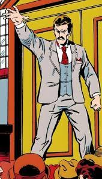

!Warning: SPOILERS!
Loki Season 2 Episode 3 came out at 9PM MDT and it was so good! I watched the episode at least 3 times within the next 2 days because I could not get enough of Victor Timely and the new role that he plays in the kang dinasty and the TVA.
Victor Timely plays a way diffrent roll in the comics, he is a variant of kang who goes back to the 1800s and essentialy sets up his future power. He does this by giving the people robot assistants and implementing some of his futuristic tech but as he does this he puts an exploit that only he knows about in every peice of tech that he gives them that he ultimately uses far in the future to create the most powerfull varient of himself.
Victor in the show and in the comics are both super cool nonetheless.
I cannot wait for the fourth episode so we can see what secret both oroboris and Ms. Minutes have!